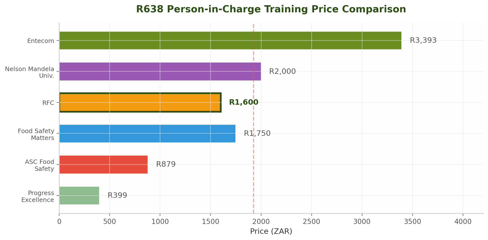
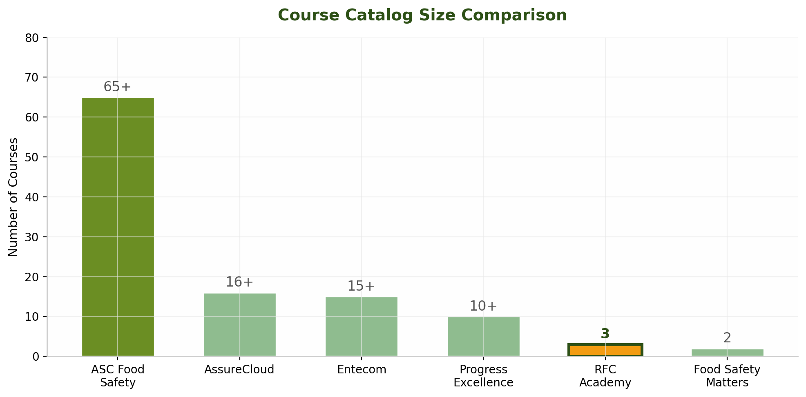
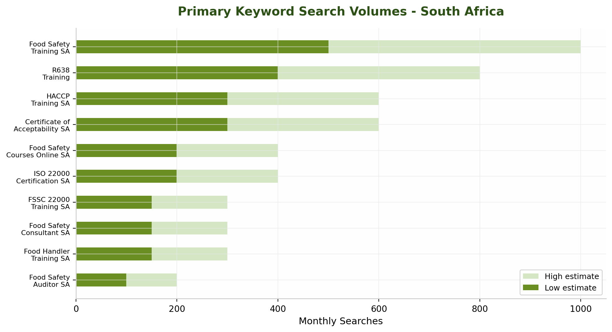
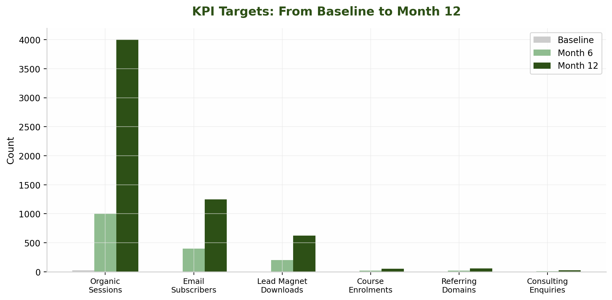

RFC (Retha Faul Consulting) operates two digital properties — rfcsa.co.za and rfcacademy.co.za — in a South African food safety market that is moderately competitive but highly fragmented. This report delivers an evidence-based roadmap to redesign both sites, capture organic search traffic, and convert visitors into qualified leads. The sector is under significant regulatory pressure: the National Consumer Commission reported 173 product recalls in 2024/25, a 40% year-on-year increase, while municipalities are publishing detailed R638 compliance requirements. This regulatory intensity creates demand for the exact services RFC provides — but that demand is being captured by competitors with stronger digital presence.
The assessment of rfcsa.co.za reveals a website functioning as a digital brochure rather than a lead generation engine. The site uses a dated dark green design with no mobile optimization, lacks a blog entirely, contains no lead capture mechanisms, and is missing schema markup. These are not cosmetic concerns. Cloudflare research indicates that a one-second page load delay can reduce conversions by up to 7%. With 72.2% of South Africa's internet traffic now originating from mobile devices and mobile-first indexing the standard for Google rankings globally, a non-mobile-optimized consulting site is effectively invisible to the majority of potential clients. DataReportal's 2025 South Africa Digital Report confirms that 46.3 million South Africans are active internet users, and 78% of B2B buyers research vendors online before making contact. RFC's current site is not positioned to intercept this research phase.
RFC Academy presents a different profile. Built on a modern e-learning platform, the academy site is functional and visually contemporary but suffers from a different strategic deficit: scale. The academy currently lists only three courses — by comparison, ASC Food Safety, the dominant competitor, offers 65+ courses spanning HACCP implementation, internal auditing, food defence, food fraud, food safety culture, GlobalGAP, and FSSC 22000 preparation. This is not merely a quantitative gap — it represents a categorical difference in how ASC captures search traffic across the entire buyer journey.
Thirteen active competitors were identified across three tiers. Tier 1 — the direct threats — includes ASC Food Safety (65+ courses, extensive blog content), Entecom (46+ articles, 61+ eBooks, proprietary compliance software), Shilux (QMSure software, WhatsApp integration), and Your Food Safety Guide / Figuro (productised consulting for food founders). The R638 training price war reveals the competitive intensity: ASC prices at R879, RFC Academy at R1,600, and Entecom at R3,393.
Keyword research identifies substantial, addressable search volume. "Food safety training South Africa" generates 500-1,000 monthly searches; "R638 training" captures 400-800; "HACCP training South Africa" attracts 300-600. Five content pillars were identified: R638/COA compliance, HACCP implementation, FSSC 22000 certification, audience-specific training, and emerging topics including food defence and food safety culture. The FSSC 22000 Version 7 scheme, published in April 2026, represents a time-sensitive content opportunity.
Phase 1 — Quick Wins (Weeks 1-2): Fix broken forms, add image alt text, implement schema markup, create Google Business Profiles.
Phase 2 — Foundation (Months 1-2): Mobile-first redesign, 13 new landing pages, WhatsApp Business integration, cross-site navigation.
Phase 3 — Content Engine (Months 3-6): 12-month blog calendar, LinkedIn 4-5x/week, Facebook 3-4x/week, five linkable assets.
Phase 4 — Growth (Months 6-12): Five new academy courses, free monthly webinars, advanced email automation.
The report details seven lead magnets (R638 Compliance Checklist, COA Application Bundle, Certification Roadmap, Home-Based Business Starter Kit, Mock Recall Template, Spaza Shop Guide, 2026 Compliance Calendar), two email nurture funnels (R638/COA six-email sequence and HACCP/FSSC five-email sequence), and 13 dedicated landing pages. Five new courses are recommended for RFC Academy: HACCP Principles (R1,600), ISO 22000 Internal Auditor (R1,600), Food Labelling R146 & R3337 (R1,600), GMP and Sanitation (R1,200), and Spaza Shop Compliance (R800).
By Month 6: organic traffic increase of 60-80%, 15-20 email subscribers per week, 5-8 qualified leads per month, and 24+ published blog articles. By Month 12: 150-200% organic traffic growth, 40-50 email subscribers per week, 15-20 qualified leads per month, 8+ published academy courses, and first-page Google rankings for 8-10 priority keywords. The food safety training and consultancy market in South Africa is growing, fragmented, and digitally immature — precisely the conditions in which a strategic, well-executed online presence can deliver outsized returns.
A rigorous audit of RFC's two digital properties — the main consulting site at rfcsa.co.za and the e-learning platform at rfcacademy.co.za — reveals a split identity. The consulting site carries the visual hallmarks of an earlier era in web design, while the academy presents a contemporary interface that nonetheless masks significant structural weaknesses. Both sites share a common deficiency: they are built to inform rather than to convert. In a market where ASC Food Safety publishes 2,000-5,000 word guides targeting virtually every high-value keyword in the sector, and Entecom maintains a Guidance Hub with 46+ articles, 61+ eBooks, and an active podcast series, RFC's near-total absence of indexable content represents a strategic vulnerability that extends far beyond aesthetics.
The rfcsa.co.za homepage presents a dark green, full-width hero overlay that immediately establishes a dated visual impression. The background imagery — aerial agricultural photography with a heavy green tint — lacks relevance to the urban food businesses, restaurants, and manufacturers that constitute RFC's core market in Pretoria and Gauteng. More critically, the hero section leads with "RFC Comply Cloud," RFC's proprietary compliance software, rather than a benefit-driven value proposition addressing the visitor's immediate need. The sub-hero section promotes the e-learning academy with a generic "Take your career in the Food Industry to the next level" message that fails to specify outcomes, differentiate from competitors, or include a compelling reason to act now.
The typography relies on all-caps treatments for section headers, a convention that contemporary usability research associates with reduced readability. Colour contrast between the green accent elements and the dark background produces a heaviness that contradicts the clarity and transparency RFC claims as core values. In contrast, ASC Food Safety employs a split-screen gateway allowing visitors to self-select between consulting and training paths, with professional food-industry photography and clear service taxonomy.
The main navigation comprises six top-level items: Home, About, Services, Food Safety Training, Comply Cloud, and Contact. The presence of dropdown submenus beneath most items indicates a hierarchical content structure, yet the absence of visual indicators (such as chevron icons) on several parent items obscures this depth from first-time visitors. The navigation logic reveals an organisational bias toward RFC's internal service taxonomy rather than the problem-statement language that prospects use when arriving on the site. A food business owner searching for "R638 compliance help Pretoria" or "HACCP certification cost" will not find those terms in the navigation labels.
The rfcsa.co.za site lacks responsive optimisation for mobile devices, a critical deficiency in the South African market where mobile accounts for the majority of business-related web traffic. Text sizing falls below the 16px minimum recommended for body copy on touch screens, touch targets for navigation items and call-to-action buttons appear smaller than the 48x48px accessibility standard, and the full-width agricultural hero image produces slow loading times on 3G and 4G connections common in peri-urban Gauteng.
Image assets on the homepage appear uncompressed and served in legacy formats rather than WebP, which typically reduces file sizes by 30-50% without perceptible quality loss. No content delivery network (CDN) implementation is evident. Browser caching headers appear under-configured, forcing repeat visitors to re-download static resources. The combination of uncompressed images, render-blocking CSS and JavaScript, and suboptimal server response times likely pushes First Contentful Paint beyond the three-second threshold that Google uses as a Core Web Vitals benchmark.
The lead generation infrastructure on rfcsa.co.za is functionally nonexistent. No blog or resource hub is present to attract organic traffic. No lead magnets are offered in exchange for contact information. The site lacks newsletter signup forms, exit-intent overlays, scroll-triggered CTAs, or chat widgets. The only conversion paths visible are the "Learn More" button on the hero section and the link to rfcacademy.co.za.
This represents a stark contrast to competitor practice. Entecom offers 61+ downloadable eBooks as lead magnets, including "8 Practical Steps to Implementing a Change Management Process in Your FSMS," captured behind email gates that build a marketing database. Food Safety Matters provides free Regulation 638 downloads and COA application process guides. Hygiene Heroes attracts signups through a comprehensive free guide on R638, HACCP, and hygiene best practices. Progress Excellence places a newsletter signup form in the header of every page. RFC's absence of any equivalent mechanism means that the vast majority of visitors leave without a trace.
The site's on-page SEO foundation requires comprehensive reconstruction. No structured data markup (schema) is present — specifically missing are LocalBusiness schema for the Pretoria headquarters, Service schema for consulting offerings, and FAQPage schema that could enable rich snippet appearances. The page title format appears generic rather than keyword-optimised. Meta descriptions lack compelling calls-to-action. No FAQ sections appear on service pages, despite question-based queries representing some of the highest-opportunity, lowest-competition keyword targets. Internal linking between the consulting site and the academy is limited to a single promotional section.
The rfcacademy.co.za platform presents a markedly more contemporary visual identity than the main consulting site. The interface employs a light green and white palette with rounded card elements, modern sans-serif typography, and clear visual hierarchy. The hero section leads with "Master Food Safety With Confidence," a benefit-oriented headline supported by SAATCA accreditation imagery. Navigation is simplified to four items — Home, Courses, Login, Register — reducing cognitive load.
However, this polished exterior conceals a fundamental supply constraint. The academy currently offers only three courses: Food Defence Plan & Food Fraud Mitigation Plan (Intermediate, 5 hours, 4 lessons), R638 (Beginner, 6 hours, 3 lessons), and Food Safety Culture (Intermediate, 6 hours, 10 lessons). The course catalog page displays "Showing 3 of 3 courses" without pagination or additional category tabs, making the limited inventory immediately apparent.
All three courses are priced uniformly at R1,600, placing RFC in the mid-market segment. ASC offers R638 training at R879 — nearly 45% below RFC's price — in what appears to be a strategic loss-leader approach. At the premium end, Entecom's video-based eLearning is priced at R3,393 including VAT. Progress Excellence occupies the budget tier at R399 for basic food safety courses. RFC's uniform pricing across all courses, regardless of level or complexity, suggests a pricing strategy based on internal cost recovery rather than market-based value perception.
SAATCA accreditation is prominently displayed — a credibility signal that distinguishes RFC from non-accredited providers. However, the accreditation advantage is diluted by the catalog's narrow scope. ASC lists 65+ courses across 8 categories. AssureCloud offers 16+ courses. Even Progress Excellence contains 10+ courses. RFC's three-course offering represents a catalog gap of approximately 95% against the market leader, severely limiting cross-sell opportunities.
The academy implements user registration and login functionality, supporting course enrollment and progress tracking. The "Get Started Free" button suggests a freemium element, yet investigation reveals no free courses, trial lessons, or preview content available without payment. Unlike competitors who publish free resources as acquisition funnels, RFC requires account creation even to view detailed course curricula. Food Safety Matters, by contrast, offers its full blog content, free R638 PDF download, and COA application guide without registration barriers.
Each course card displays difficulty level, duration, and lesson count, but all three courses show "No reviews yet." The testimonial section presents three anonymous quotes without surnames, company affiliations, photographs, or verifiable credentials. The footer claims RFC Academy is the choice of "thousands of professionals," yet no enrollment counts, completion statistics, or verified learner reviews support this assertion. In a training market where Entecom cites 9,000+ graduates and 250+ company partnerships, the absence of authentic social proof represents a significant conversion barrier.
| Issue | Business Impact | Effort | Priority | Timeline |
|---|---|---|---|---|
| No blog or content hub on rfcsa.co.za | Very High | High | Strategic Investment | Months 1-2 |
| No lead magnets or email capture | Very High | Medium | Quick Win | Weeks 1-2 |
| Mobile non-optimization of rfcsa.co.za | Very High | High | Strategic Investment | Months 1-3 |
| Academy limited to 3 courses | High | High | Strategic Investment | Months 3-6 |
| Missing schema markup | High | Low | Quick Win | Week 1 |
| No FAQ sections on service pages | Medium-High | Low | Quick Win | Weeks 1-2 |
| Suboptimal page titles and meta descriptions | Medium-High | Low | Quick Win | Week 1 |
| No course reviews or authentic testimonials | Medium | Low | Quick Win | Weeks 1-2 |
| No city-specific landing pages | Medium-High | Medium | Short-Term | Month 2 |
| Slow page speed (images, caching, CDN) | Medium | Low-Medium | Quick Win | Week 1 |
| No WhatsApp/chat integration on rfcsa.co.za | Medium | Low | Quick Win | Week 1 |
| Uniform R1,600 pricing without value tiers | Medium | Low | Quick Win | Week 2 |
The distribution reveals a clear pattern: approximately half of the identified problems are "Quick Wins" requiring low effort but delivering meaningful business impact. These should be executed in parallel during the first two weeks of the engagement, before larger strategic investments begin.
| Dimension | RFC | ASC | Entecom | Progress Excellence | Food Safety Matters |
|---|---|---|---|---|---|
| Courses Offered | 3 online | 65+ across 8 categories | 15+ eLearning + classroom | 10+ across FS, Q, HSE | 2 focused courses |
| Blog/Content Hub | None | Extensive 2,000-5,000w guides | 46+ articles, 61+ eBooks, 11 podcasts | Information Hub: 20+ articles | SEO-targeted blog posts |
| Lead Magnets | None | Free consultation | Free eBooks, newsletter, callback | Free PDFs, newsletter | Free R638 PDF, COA guide |
| FAQ / Rich Content | None | FAQ on every service page | Extensive guidance content | Resource downloads | Q&A format in blog |
| Schema Markup | None | Implemented | Structured data for courses | Unknown | Limited |
| Local SEO | None | 4 city pages | National franchise coverage | Western Cape focused | National online |
| Chat/Real-Time Contact | None | WhatsApp + phone | Chat widget + WhatsApp | Phone + email | Contact form only |
| Social Proof | Unverified testimonials | Client logos, case studies | Graduate counts, testimonials | Testimonials, bulk data | Student success stories |
This comparison reveals that RFC trails every assessed competitor across the content and lead generation dimensions that increasingly determine B2B purchasing decisions. Only in the area of SAATCA accreditation does the company maintain parity. The most alarming gap is the complete absence of indexable content on rfcsa.co.za: while competitors maintain active publishing calendars that continuously expand their keyword footprint, RFC's consulting site offers search engines virtually nothing beyond its six primary pages to index or rank.
RFC operates in a moderately competitive but fragmented market for food safety consulting and training in South Africa. Thirteen significant competitors were identified across three tiers: four full-service direct competitors, four training-focused specialists, and five international certification bodies. The most important strategic insight is that the competitive battlefield has shifted from credentials — where most SAATCA-registered providers are broadly equivalent — to content marketing, course catalog breadth, and digital lead generation. ASC Food Safety and Entecom have established commanding leads in these areas that RFC is currently not contesting.
ASC Food Safety Consultants (ascfoodsafety.com) is RFC's most formidable competitor across virtually every metric that matters for digital visibility and training revenue. Headed by Mthokozisi Nkosi — one of only three SAATCA Registered R638:2018 Lead Implementers in South Africa — ASC has built a content moat unmatched by any other domestic competitor. The organisation operates a deliberate two-site strategy: ascfoodsafety.com handles consulting and SEO-driven content, while ascfoodsafetytraining.com functions as a dedicated learning management system, effectively doubling ASC's SERP real estate for every high-value keyword.
ASC offers 65-plus courses across eight categories and five delivery modes — online self-paced, virtual classroom, physical classroom, enterprise on-site, and blended. Its R638 Person-in-Charge course is priced at R879, making it the most aggressively priced SAATCA-accredited online offering and significantly undercutting RFC's R1,600 price point. ASC supplements this with triple accreditation — SAATCA Technical Certificate No. 065, FoodBev SETA accreditation, and HPCSA recognition — enabling municipal acceptance across all 278 South African municipalities.
Where ASC truly separates itself is content marketing. The company maintains a blog with pillar pages regularly exceeding 2,000 to 5,000 words, covering topics from FSSC 22000 V7 transition to BRCGS Issue 9 audit preparation. Each article features FAQ sections, related-article cross-linking, and embedded CTAs driving readers toward course enrolment or consulting enquiries. ASC also produces downloadable FSMS toolkits, self-inspection checklists, and cleaning schedule templates that function as both lead magnets and productised revenue streams. ASC has positioned itself as the default information source for food safety decision-makers in South Africa.
Entecom (entecom.co.za), operating for 19 years from its Gqeberha headquarters with a franchise network extending nationwide, adds two differentiated revenue streams that RFC cannot currently match: EO Food Compliance Software and the Small Supplier Compliance Programme. EO is Entecom's proprietary SaaS compliance platform that digitises checklists, document control, supplier quality assurance, and internal auditing. The Small Supplier Compliance Programme offers tiered packages from basic R638 compliance through GFSI Intermediate Level certification.
Entecom's content engine rivals ASC's in format diversity. The Guidance Hub contains 46-plus articles, 61-plus downloadable eBooks, 11-plus podcasts, and 5-plus webinars. New content is published regularly — the latest article was dated April 2026 — which signals active indexing by search engines and sustained audience engagement. Lead generation tactics include free eBook downloads gated behind email capture, chat widgets on every page, callback request forms, and a course shop with full cart functionality. For RFC, Entecom represents the benchmark for content volume and format diversity.
Shilux (shilux.co.za), headquartered in Century City, Cape Town, presents a differentiated value proposition built around QMSure — a paperless quality management system competing directly with Entecom's EO platform — and an SME Supplier Compliance Support Programme with WhatsApp integration. The WhatsApp click-to-functionality recognises the communication preferences of South African business owners. Shilux's content strategy is comparatively modest — a resources section, FAQ page, and dedicated landing pages — which creates a potential opening for RFC in the organic search channel. Its standards coverage is broad, spanning BRCGS Food Safety Issue 9, GLOBALG.A.P. IFA Version 6, IFS Food Version 8, and ISO/IEC 17025:2017.
Your Food Safety Guide (yourfoodsafetyguide.co.za), the public-facing brand of Bennii Van Rooy Consulting (BVRC), represents a fundamentally different competitive threat. Rather than competing on consulting hours or training days, Figuro sells self-service digital tools that enable food founders to build their own audit-ready food safety systems without ongoing consultant engagement. The product suite includes Figuro HACCP (a guided HACCP plan builder), Figuro PRP (prerequisite programme documentation), and Figuro Founder (food safety culture training), all sold as one-time purchases. BVRC has supported over 300 audits across 25 years and has built a brand that resonates specifically with small food businesses and startups.
Progress Excellence (progress-excellence.co.za) operates from the Western Cape and has positioned itself as the lowest-cost provider. Its basic food safety course at R399 — the cheapest online offering identified, though not SAATCA-accredited at this tier — captures price-sensitive learners. The organisation maintains an "Information Hub" and "Food Bites Blog" with approximately 20-plus articles. The strategic risk for RFC is that Progress Excellence anchors price expectations at the low end of the market, creating an objection that RFC's sales process must be equipped to overcome.
Food Safety Matters (foodsafetymatters.co.za) delivers courses through the Thinkific platform and has carved out a sharply defined niche: entrepreneurs and new food businesses navigating their first COA application and R638 compliance requirements. Its R638 Person-in-Charge course is SAATCA-accredited (TCP No. 045) and priced at R1,750, slightly above RFC's R1,600. Two free downloadable resources — the full Regulation 638 PDF and a COA application process guide — function as lead magnets that build trust before any purchase decision. Food Safety Matters is RFC's closest competitor in terms of target audience overlap.
AssureCloud (assurecloud.co.za), the training arm of Aspirata, operates for over 20 years with JAS-ANZ and SANAS accreditation. Unlike RFC, AssureCloud's primary business is certification auditing — issuing ISO 22000, FSSC 22000, and HACCP certificates — with training delivered as a supporting service. Its 16-plus course catalogue spans specialised programmes including Micro for Non-Microbiologists, Food Defence and Food Fraud (VACCP/TACCP), and Pest Control. AssureCloud's content presence is thin, creating a gap that RFC could exploit. However, its dual role as both certifier and trainer creates a conflict-of-interest barrier that RFC, as a non-certifying consultancy, can leverage.
Hygiene Heroes (hygieneheroes.org.za) positions itself not as a conventional training provider but as a movement for food service businesses. Its primary asset is a comprehensive free guide — "A Step-by-Step Guide to R638, HACCP, and Hygiene Best Practices" — covering South African food safety law, R638 breakdown, the five food safety rules, and the seven HACCP principles. This is one of the most thorough free R638 resources available in South Africa and likely captures significant organic search traffic for informational queries that RFC's website is currently not configured to intercept.
Tier 3 competitors are large international organisations whose South African operations represent a small component of global food safety certification and training revenue. They do not compete aggressively for RFC's mid-market consulting clients but set the ceiling for accreditation credibility.
Merieux NutriSciences EQUIP operates for 29-plus years with 9,000-plus graduates and 250-plus company clients. Its strength lies in laboratory and technical training. SGS South Africa is a GLOBALG.A.P. approved certification body and FSSC 22000 certification services provider offering CQI and IRCA-accredited lead auditor training at premium rates. The SABS Training Academy, as SAATCA-approved online provider No. 003, carries unmatched institutional credibility but maintains a limited digital presence. DQS Academy and TUV SUD both deliver FSSC 22000 auditor training at premium pricing, competing for auditor certification — a segment RFC does not currently target.
The collective lesson from Tier 3 is that the most competitive layer of the South African food safety market is not at the top, where international brands serve large enterprises, but at the mid-market and SME levels where RFC, ASC, Entecom, and Shilux compete. RFC's strategic priority should be to defend and expand this mid-market position.
| Provider | Price (ZAR) | Format | Accreditation | Key Differentiator |
|---|---|---|---|---|
| Progress Excellence | R399 | Online self-paced | Not SAATCA (basic) | Lowest price; entry-level |
| ASC Food Safety | R879 | Online self-paced | SAATCA + SETA + HPCSA | Most aggressively priced triple-accredited |
| Food Safety Matters | R1,750 | Online via Thinkific | SAATCA (TCP 045) | Thinkific platform; entrepreneur-focused |
| RFC | R1,600 | Online | SAATCA | Mid-market positioning |
| Nelson Mandela University | R2,000 | 2-day classroom | SETA Accredited | Academic credibility; classroom delivery |
| Entecom | R3,393 (incl VAT) | Online video eLearning | SAATCA / SETA | Most comprehensive; video-based with assessor |

| Provider | Courses Offered | Categories | Delivery Modes | Geographic Focus |
|---|---|---|---|---|
| ASC Food Safety | 65+ | 8 categories, 5 levels | Online, virtual, classroom, on-site, blended | National |
| AssureCloud | 16+ | Auditing, HACCP, ISO, R638, PRPs, culture | Classroom, on-site | National |
| Entecom | 15+ | FS, H&S, ISO, environmental | eLearning, virtual, classroom, workshops | National (franchise) |
| Progress Excellence | 10+ | FS, quality, HSE, auditing | Online, classroom | Western Cape |
| RFC Academy | 3 | Food safety only | Online | Pretoria / National |
| Food Safety Matters | 2 | R638, basic food handler | Online via Thinkific | National |

| Provider | Blog/Articles | Downloadable Resources | Lead Capture | SEO Strength |
|---|---|---|---|---|
| ASC Food Safety | 50+ pillar guides (2,000-5,000w) | FSMS toolkits, checklists, templates | Free consultation, bundles, WhatsApp | Very High — page 1 for most keywords |
| Entecom | 46+ articles, 61+ eBooks, 11 podcasts | eBooks (gated), webinar recordings | Free downloads, chat, callbacks, newsletter | High — multi-format indexing |
| Shilux | Resources section, FAQ | SME support guide | WhatsApp, contact form, demo requests | Moderate — thin long-form content |
| Figuro / YFSG | Blog with founder-focused articles | Free newsletter, quiz, micro-lessons | Newsletter, "Find Your Starting Point" quiz | Moderate — focused niche |
| Progress Excellence | 20+ articles (Food Bites Blog) | PDF comparisons, fact sheets | Newsletter signup, custom quote | Low-Moderate |
| Food Safety Matters | 5+ SEO-targeted posts | Free R638 PDF, COA guide | Free download gating for email | Moderate — strong niche focus |
| RFC | None | None | Contact form only | Very Low — no content index |
RFC Academy should add 4-6 courses within 12 months, prioritising topics that RFC already teaches in consulting engagements: HACCP Awareness, Internal Auditor Training (ISO 22000/FSSC 22000), Food Defence and Food Fraud (VACCP/TACCP), Food Safety Culture, and Basic Food Handler Training.
RFC should bundle its R638 course with high-value add-ons that ASC does not include: a downloadable R638 compliance checklist, a COA application guide, a 15-minute post-course consultation call, and WhatsApp support for regulatory questions. This transforms the offering from "a course" to "a compliance package."
Launching a /blog or /resources section on rfcsa.co.za with four pillar articles would begin closing the content gap within 60 days and create indexed assets that generate traffic for years.
Creating dedicated landing pages for "food safety training Pretoria," "R638 training Pretoria," and "HACCP training Pretoria" with locally relevant content would give RFC first-mover advantage in local search results for its own geographic backyard.
The minimum viable upgrade is three mechanisms within 30 days: a free downloadable R638 compliance checklist (gated behind email), a WhatsApp Business click-to-chat button, and a newsletter signup with monthly regulatory updates.
This chapter outlines the search engine optimisation strategy designed to move RFC's digital properties from their current state of near-invisibility in organic search to consistent first-page rankings for priority keywords. The strategy is built on five interconnected pillars: keyword targeting informed by verified South African search data, on-page technical improvements, local SEO for Pretoria and Gauteng dominance, a systematic link building programme, and structured data implementation to capture rich snippets and Google's Local Pack.
Keyword research using South Africa-specific data identifies substantial, addressable search volume in RFC's core service areas. The following ten keywords represent the highest-priority targets, selected on the basis of monthly search volume, commercial intent (indicating the searcher is actively evaluating training or consulting services), and competitive accessibility (none are dominated by government or international institutional sites that would be impossible to outrank).
| Primary Keyword | Monthly Searches (SA) | Competition | Intent | Priority |
|---|---|---|---|---|
| food safety training South Africa | 500-1,000 | High | Commercial | High |
| R638 training | 400-800 | High | Commercial | High |
| HACCP training South Africa | 300-600 | High | Commercial | High |
| Certificate of Acceptability South Africa | 300-600 | Low-Medium | Info/Commercial | High |
| food safety courses online South Africa | 200-400 | Medium | Commercial | High |
| ISO 22000 certification South Africa | 200-400 | Medium | Commercial | Medium |
| FSSC 22000 training South Africa | 150-300 | Medium-High | Commercial | High |
| food safety consultant South Africa | 150-300 | Medium | Commercial | High |
| food handler training South Africa | 150-300 | Medium | Commercial | High |
| food safety auditor South Africa | 100-200 | Medium | Commercial | Medium |

Long-tail keywords — queries of three or more words with lower individual search volume but significantly lower competition and higher conversion intent — represent the fastest path to early ranking successes. The following 15 long-tail targets are organised by content pillar.
| Long-Tail Keyword | Monthly Searches | Competition | Content Pillar |
|---|---|---|---|
| how to get Certificate of Acceptability in South Africa | 100-200 | Low | R638/COA |
| R638 training for person in charge online | 100-200 | Medium | R638/COA |
| R638 compliance checklist PDF | 100-200 | Low | R638/COA |
| what is Regulation 638 | 100-200 | Low | R638/COA |
| food safety training Pretoria | 50-100 | Low | Local SEO |
| HACCP training Pretoria | 50-100 | Low | Local SEO |
| FSSC 22000 V7 transition South Africa | 50-100 | Very Low | FSSC 22000 |
| food safety training Johannesburg | 50-100 | Low | Local SEO |
| how to apply for COA South Africa | 50-100 | Low | R638/COA |
| food safety requirements for restaurants South Africa | 50-100 | Low | Audience-Specific |
| food safety consulting Pretoria | 30-50 | Low | Local SEO |
| ISO 22000 training Pretoria | 20-40 | Low | Local SEO |
| GlobalG.A.P certification South Africa | 30-50 | Low | GlobalG.A.P |
| internal auditing food safety training | 50-100 | Low | HACCP/ISO |
| food safety culture training South Africa | 30-50 | Low | Food Safety Culture |
Question-based queries represent a high-opportunity content target because they trigger Google's "People Also Ask" feature, which can generate substantial click-through volume even from lower overall search frequencies. RFC should create FAQ content targeting each of these questions.
| Question Keyword | Search Intent | Recommended Content Format |
|---|---|---|
| What is Regulation R638 in South Africa? | Informational | Explainer blog post + infographic |
| How do I apply for a Certificate of Acceptability? | Informational/Transactional | Step-by-step guide with download |
| What training is required for food handlers in SA? | Informational | Requirements comparison table |
| How much does HACCP training cost in South Africa? | Commercial | Pricing guide with comparisons |
| What is the difference between HACCP and FSSC 22000? | Informational | Comparison article + decision tool |
| Who needs R638 training? | Informational | Audience-specific landing pages |
| How long does ISO 22000 certification take? | Informational | Timeline guide with process map |
| What is a food safety auditor? | Informational | Career guide + course promo |
| How do I start a food business in South Africa? | Informational | Comprehensive startup guide |
| What are the 7 principles of HACCP? | Informational | Educational article + checklist |
| What is food safety culture? | Informational | Culture assessment guide |
| What is food defence and food fraud? | Informational | TACCP/VACCP explainer |
| What is GLOBALG.A.P certification? | Informational | Farmer-focused guide |
| How often should food safety training be done? | Informational | Training calendar template |
| What are the requirements for food premises in SA? | Informational | R638 compliance checklist |
RFC's content production should be organised around five thematic pillars, each anchored by a comprehensive pillar page and supported by cluster content targeting specific long-tail keywords. This architecture signals topical authority to Google's algorithms and creates natural internal linking structures that distribute ranking power throughout the site.
Pillar 1: R638 and Certificate of Acceptability Compliance — RFC's demonstrated regulatory strength. Anchor content: "The Complete Guide to Regulation R638 Compliance in South Africa." Cluster articles: How to Apply for a Certificate of Acceptability by city; R638 Training: What the Person in Charge Needs to Know; R638 Compliance Checklist (free download); R638 vs R962: What's Changed; How to Pass a Municipal Health Inspection.
Pillar 2: HACCP Training and Certification — The foundation of all food safety systems. Anchor content: "HACCP Training in South Africa: A Complete 2026 Guide." Cluster articles: HACCP Training Cost Comparison (all providers); Online vs Classroom HACCP Training; The 7 HACCP Principles Explained with Examples; HACCP for Small Businesses in South Africa.
Pillar 3: FSSC 22000 and ISO 22000 Certification — Enterprise-grade certification. Anchor content: "FSSC 22000 Certification in South Africa: The 2026 Guide." Cluster articles: FSSC 22000 V7: What's New; FSSC 22000 vs BRCGS: Which Is Right; How Long Does Certification Take; ISO 22000 Lead Auditor Training.
Pillar 4: Audience-Specific Food Safety — Targeting underserved segments. Content: Food Safety Training for Restaurants; Food Safety for Spaza Shops and Informal Traders; Food Safety Requirements for School Kitchens; Food Safety for Catering Businesses; Home-Based Food Business Compliance.
Pillar 5: Food Defence, Food Fraud, and Food Safety Culture — Emerging and specialist topics. Content: Food Defence Plan: A Practical Guide; Food Fraud Mitigation: VACCP Explained; Building a Food Safety Culture; TACCP vs VACCP vs HACCP: The Differences.
| Priority | Action | Impact | Effort | Timeline |
|---|---|---|---|---|
| Critical | Add blog/content hub at /blog or /resources | Enables all organic traffic acquisition | High | Months 1-2 |
| Critical | Create city landing pages (Pretoria, JHB, CT, Durban) | Captures local search intent | Medium | Month 2 |
| High | Optimise page titles: "[Service] | [City] | RFC" | Improves click-through from SERP | Low | Week 1 |
| High | Implement FAQ schema on all service pages | Enables rich snippets, voice search | Low | Week 1 |
| High | Rewrite meta descriptions with CTAs | Increases CTR from search results | Low | Week 1 |
| High | Build internal linking between service and course pages | Distributes authority, reduces bounce | Low | Week 2 |
| Medium | Add descriptive alt text to all images | Improves image search, accessibility | Low | Week 1 |
| Medium | Create service silos: /training/, /consulting/, /auditing/ | Improves topical authority signals | Medium | Month 1 |
| Medium | Add breadcrumb navigation | Improves UX and structured data | Low | Week 2 |
Mobile Optimisation: The current rfcsa.co.za site requires a complete responsive rebuild. Critical fixes include implementing a responsive CSS framework (Bootstrap or Tailwind), setting minimum 16px body text on mobile, ensuring 48x48px minimum touch targets, implementing lazy loading for images, and eliminating horizontal scrolling. With 72.2% of South African internet traffic originating from mobile devices, this is not a nice-to-have — it is a prerequisite for ranking.
Site Speed: Target sub-3-second load time. Specific actions: convert all images to WebP format (30-50% file reduction), minify CSS and JavaScript, enable browser caching, implement a CDN (Cloudflare free tier is sufficient), remove render-blocking resources, and optimise server response time to under 200ms. Google's Core Web Vitals — Largest Contentful Paint, First Input Delay, and Cumulative Layout Shift — are confirmed ranking factors.
Schema Markup: Implement the following schema types: LocalBusiness (homepage and contact page), Course (all rfcacademy.co.za course pages), FAQPage (all service pages), Article (all blog posts), Service (consulting service pages), and BreadcrumbList (all pages). Schema markup enables rich snippets in search results — star ratings, course prices, FAQ dropdowns — that significantly increase click-through rates.
RFC must create and fully optimise a Google Business Profile for its Pretoria location. Primary categories: "Food Safety Consultant" (main), "Training Centre," and "Consultant." The profile should include all services offered, professional photographs of the training facility and team, regular Google Posts (weekly updates on courses, regulatory news, and blog content), and a complete Q&A section addressing common client questions. Businesses in the Google Local Pack receive 44% of local search clicks — for a Pretoria-based consultancy, this is the fastest path to visible ranking improvements.
Name, Address, and Phone number must be identical across all online listings. RFC should submit to the following South African business directories within the first month: Yello, Brabys, Hotfrog, SA Yellow, Business Directory, Find It SA, SABizGuide, Yalwa, Cylex, and Snupit. Industry-specific directories include SAATCA directory, FoodBev SETA provider list, SAAFFI supplier directory, and Food & Beverage Reporter supplier directory.
Actively request Google reviews from training attendees and consulting clients. A systematic review generation programme — sending follow-up emails 7 days post-course with a direct Google review link — can build 20-30 reviews within 60 days. BrightLocal's research confirms that review quantity and recency are ranking factors for the Local Pack.
Join and secure listings from: FoodBev SETA (Sector Education and Training Authority), SAAFoST (South African Association for Food Science & Technology), SAATCA (ensure directory profile is complete), CGCSA (Consumer Goods Council of SA), and SIZA (Sustainability Initiative of South Africa). Each listing provides a authoritative .co.za backlink and referral traffic from food industry professionals.
| Publication | Audience | Topic Angle | Est. Domain Authority |
|---|---|---|---|
| Bizcommunity.com | B2B decision-makers | Food industry compliance trends | 80+ |
| Food & Beverage Reporter | Food industry professionals | Certification and standards updates | 45+ |
| Food For Mzansi | Agricultural sector | Farm-level food safety | 45+ |
| SME South Africa | Small business owners | Food business startup compliance | 50+ |
| FMCG News SA | Retail/manufacturing | Retailer food safety requirements | 40+ |
| Skills Portal | HR/training professionals | Food safety training requirements | 45+ |
| The Citizen Business | General business | Food safety for SMEs | 70+ |
| Business Report (IOL) | Business owners | Spaza shop regulations | 75+ |
Cross-promote with complementary service providers: pest control companies, cleaning chemical suppliers, food equipment suppliers, packaging suppliers, and commercial kitchen designers. Each partnership can produce mutual backlinks, co-branded content, and referral traffic. Municipal Environmental Health Departments may list approved training providers on their websites — these .gov.za backlinks carry exceptional authority.
Create definitive, link-worthy resources that other sites will naturally reference: "The Complete R638 Compliance Guide for South Africa" (updated annually), "South African Food Safety Regulations: A Visual Map," and "Food Premises Inspection Checklist" (downloadable PDF). These resources attract editorial links from industry publications, government resource pages, and academic food science departments.
The website redesign recommendations in this chapter address the fundamental architectural and experiential deficiencies identified during the audit of both RFC properties. The recommendations prioritise conversion rate optimisation — transforming both sites from information repositories into lead generation engines — while maintaining the professional credibility that SAATCA accreditation and 12+ years of industry experience provide.
The consulting site requires a complete visual and technical rebuild. The redesign should implement a mobile-first CSS framework (Bootstrap 5 or Tailwind CSS), target sub-3-second load times, convert all images to WebP format, implement lazy loading for below-fold images, and establish a clear visual hierarchy with adequate whitespace. The current dark green hero section with agricultural photography should be replaced with a clean, professional design that communicates expertise and trust. ASC Food Safety's split-screen gateway approach — allowing visitors to self-select between consulting and training paths — should be adapted for RFC's dual-property strategy.
The redesigned homepage must lead with a benefit-driven value proposition rather than a product feature. The hero section should address the visitor's immediate problem: "Get Your Food Business Compliant with South Africa's Food Safety Regulations." Below the hero, the page should include: trust indicators (SAATCA logo, years in business, client count), a clear service overview organised by buyer intent ("I need training" vs "I need consulting" vs "I need compliance software"), testimonials with full names and company affiliations, and a prominent CTA section with multiple contact options (phone, email, WhatsApp, consultation booking form).
Every page on the redesigned site must include at least one lead capture mechanism. Specific implementations: Exit-intent popup on all content pages offering the R638 Compliance Checklist download; Newsletter signup in the footer with a monthly regulatory update promise; Free consultation booking form accessible from every page via a floating button; WhatsApp click-to-chat button in the bottom-right corner of every page, connected to a WhatsApp Business account with automated welcome messages and quick-reply options for common enquiries.
Each service page should function as a dedicated landing page with: a clear, benefit-driven headline; a subheadline with a specific outcome promise; 3-5 bullet-point benefits; trust indicators (SAATCA logo, accreditation details); an FAQ section (minimum 5 questions) targeting "People Also Ask" queries; links to related courses on rfcacademy.co.za; and a contact form with a compelling CTA ("Get a Free Compliance Assessment" rather than "Contact Us"). Service pages should also include downloadable resources specific to that service — an R638 checklist for the compliance page, an internal audit template for the auditing page.
Create dedicated landing pages for each major South African city: Pretoria, Johannesburg, Cape Town, Durban, Bloemfontein, and Polokwane. Each page should include: city-specific headline ("Food Safety Training in Pretoria"), local context (Tshwane municipal procedures for Pretoria, City of Johannesburg requirements), local case studies or testimonials, directions and parking information for classroom courses, and a city-specific contact form. These pages capture local search intent that competitors are largely ignoring — ASC's city pages focus heavily on Gqeberha, leaving Pretoria and Johannesburg comparatively under-served.
The academy's most significant conversion barrier is the absence of free content. Implement: Course previews — the first module of each course available without registration; Free mini-modules — standalone 15-20 minute lessons on specific topics (e.g., "Understanding the 7 HACCP Principles") that require only email signup; Webinar recordings — archive of past monthly webinars as both acquisition channels and value demonstrations; and a Free resources section with downloadable PDFs, checklists, and templates that do not require account creation.
Implement a verified review system where students can rate courses upon completion. Replace anonymous testimonials with verified reviews showing full names, job titles, and company names (with permission). Display enrollment counts and completion statistics on each course page ("1,247 students enrolled"). Add a "recent completions" ticker showing real-time course completion notifications. Social proof is a primary conversion driver in online education — Entecom's citation of 9,000+ graduates directly influences enrollment decisions.
Add a "Recommended for You" section on the course catalog and individual course pages. Upon registration, collect strategic data points: business type, current certification status, training goals, and job role. Use this data to suggest relevant courses. After R638 course completion, recommend HACCP Awareness. After HACCP, recommend Internal Auditor Training. This mimics the learning pathways that ASC uses to increase average revenue per student.
Both sites should share consistent branding elements: logo, colour palette, typography, and tone of voice. The consulting site navigation should include a prominent "Training Courses" link to rfcacademy.co.za. The academy navigation should include "Consulting Services" and "Get Help" links back to rfcsa.co.za. This cross-navigation treats both properties as a single ecosystem rather than isolated sites, increasing time-on-site and conversion opportunities.
The blog should be hosted on rfcsa.co.za (the older, more established domain) with every blog post including contextual CTAs linking to relevant rfcacademy.co.za courses. A blog post about R638 compliance should include a CTA for the R638 training course. A post about internal auditing should link to the Internal Auditor course. This internal linking structure distributes SEO authority from the blog to the academy course pages, improving their search rankings.
Both sites should feed into a single email marketing platform (Mailchimp, Brevo, or HubSpot) with segmented lists: "Consulting Prospects," "Training Prospects," "Course Students," and "Newsletter Subscribers." Lead magnet downloads on either site should trigger appropriate nurture sequences. A visitor downloading the R638 checklist from rfcsa.co.za receives the R638/COA email funnel promoting the academy course. A student completing a course on rfcacademy.co.za receives consulting service recommendations. This unified approach ensures no lead falls through the cracks and every prospect receives relevant, targeted communications.
| Competitor Feature | ASC Food Safety | Entecom | Shilux | RFC (Current) | RFC (Planned) |
|---|---|---|---|---|---|
| Responsive Design | Yes | Yes | Yes | No | Yes (Month 1) |
| Blog/Content Hub | Extensive | Extensive | Limited | None | Yes (Month 1) |
| Lead Magnets | Toolkits, checklists | 61+ eBooks | SME guide | None | 7 PDFs (Week 2) |
| WhatsApp Integration | Yes | Yes | Yes | No | Yes (Week 1) |
| City Landing Pages | 4 cities | National | Multiple | None | 6 cities (Month 2) |
| FAQ Sections | Every page | Extensive | Dedicated page | None | All service pages |
| Schema Markup | Yes | Yes | Basic | None | Full (Week 1) |
| Newsletter Signup | Yes | Yes | No | No | Yes (Week 2) |
| Chat Widget | No | Yes | No | WhatsApp (Week 1) | |
| Free Course Preview | No | Yes | No | No | Yes (Month 1) |
This chapter provides a complete 12-month blog content calendar, social media amplification strategy, and linkable asset plan. The content strategy is designed to achieve three simultaneous objectives: capture organic search traffic for priority keywords, establish RFC as a thought leader in South African food safety, and feed the lead generation funnel with engaged prospects. Every blog topic has been selected based on verified search volume, competitive gap analysis, and direct relevance to RFC's service offerings.
Each blog post should be 1,500-2,500 words, published on Tuesdays at 9:00 AM SAST for maximum LinkedIn engagement. SEO format: H1 for title, H2 for main sections, H3 for subsections. Target keyword in first 100 words, at least one H2, and conclusion. Each blog is accompanied by a LinkedIn post hook, Facebook post angle, and suggested CTA.
Title: "The Complete Guide to Getting Your Certificate of Acceptability (COA) in South Africa: A Step-by-Step Process for Every Province"
Primary Keyword: Certificate of Acceptability South Africa
Description: Comprehensive guide walking food business owners through the COA application process across all nine provinces. Explains R638 requirements, documents needed, municipal fee structures, inspection preparation tips, and common reasons applications fail. Includes province-specific contact details and processing timelines.
LinkedIn Hook: "Did you know that operating a food business without a Certificate of Acceptability is a criminal offence in South Africa? Environmental Health Practitioners can close your premises on the spot. We put together the most comprehensive COA guide ever published for SA food businesses."
Facebook Angle: "Starting a food business in 2026? Before you sell your first meal, you NEED a Certificate of Acceptability. Our step-by-step guide breaks down exactly what you need, how much it costs in your municipality, and how to pass your inspection the first time."
CTA: "Need help navigating your COA application? RFC offers on-site gap audits across Gauteng, Pretoria, and surrounding areas starting from R2,500."
Title: "R638 Explained: The 10 Legal Duties Every Person in Charge (PIC) Must Know in 2026"
Primary Keyword: R638 Person in Charge duties
Description: Decodes Regulation R638 section-by-section, focusing on the 10 critical legal duties of the Person in Charge. Covers training requirements, food handler obligations, structural requirements, temperature control, pest control, waste management, protective clothing, and record-keeping. Includes a downloadable PIC duties checklist.
LinkedIn Hook: "Being named as the Person in Charge on your Certificate of Acceptability isn't just a formality — it makes YOU personally liable if your food premises doesn't comply with R638. Here are the 10 legal duties every PIC must know."
CTA: "Ensure you meet every PIC requirement with RFC's SAATCA-accredited R638 training course at rfcacademy.co.za."
Title: "HACCP vs. ISO 22000 vs. FSSC 22000: Which Food Safety Certification Does Your South African Business Actually Need?"
Primary Keyword: HACCP ISO 22000 FSSC 22000 South Africa
Description: A clear, decision-tree style guide helping food businesses choose the right certification. Explains HACCP (the foundation), ISO 22000 (international FSMS), and FSSC 22000 Version 7 (GFSI-recognised, retailer-required). Covers which certification is needed for different business types — restaurants, manufacturers, exporters, retailers.
LinkedIn Hook: "Woolworths just rejected your product because you don't have FSSC 22000? We break down exactly which food safety certification your business needs — HACCP, ISO 22000, or FSSC 22000 — with real requirements from SA's major retailers."
CTA: "Not sure which certification applies? RFC offers free 30-minute consultation calls to assess your certification needs."
Title: "The Spaza Shop Compliance Guide: Navigating South Africa's 2026 Food Safety Registration Requirements"
Primary Keyword: Spaza shop registration South Africa 2026
Description: Following the 2024-2025 registration crackdown, this guide addresses the urgent compliance needs of South Africa's 150,000+ spaza shops. Covers registration requirements, COA application for informal traders, R638 basics, pest control requirements, documentation needed, and penalties for non-compliance. Includes a township-specific compliance checklist.
LinkedIn Hook: "With 150,000+ spaza shops facing new registration requirements, South Africa's informal food sector is at a compliance crossroads. Our guide breaks down exactly what spaza shop owners need to know."
CTA: "RFC offers affordable R638 compliance training specifically designed for spaza shops and informal traders."
Title: "Food Safety Culture: What FSSC 22000 Version 6 Requires and How to Build It in Your South African Business"
Primary Keyword: Food safety culture FSSC 22000 Version 6
Description: FSSC 22000 Version 6 now mandates food safety and quality culture as a core requirement. This article explains what food safety culture means in practice, the 5 dimensions, GFSI expectations, and how SA businesses can build a documented culture plan. Includes templates for culture objectives and a sample plan.
LinkedIn Hook: "FSSC 22000 Version 6 didn't just tweak existing rules — it made Food Safety Culture MANDATORY. Not a nice-to-have. A documented, measured, management-led requirement. Here's what SA food businesses need to know."
CTA: "RFC Academy offers a comprehensive Food Safety Culture course. For businesses needing hands-on implementation, our consultants can develop your full culture plan."
Title: "How to Start a Home-Based Food Business in South Africa: Licenses, Regulations, and Food Safety Requirements"
Primary Keyword: Home-based food business South Africa regulations
Description: The post-COVID boom in home-based food businesses (bakers, caterers, sauce makers, meal prep services) has created massive compliance guidance demand. Covers COA application for home kitchens, municipal zoning, R638 compliance for residential premises, labelling requirements under R146, shelf-life testing, SARS tax registration, and when HACCP certification is needed.
LinkedIn Hook: "The home-based food business sector in SA is booming — but most operators don't realise they're trading illegally without a COA. We created the definitive guide to starting a COMPLIANT home-based food business."
CTA: "RFC provides affordable consultation packages for home-based food entrepreneurs in Pretoria and surrounding areas."
Title: "Understanding TACCP and VACCP: Food Defence and Food Fraud Protection for South African Food Businesses"
Primary Keyword: TACCP VACCP South Africa food defence
Description: Demystifies Threat Assessment Critical Control Points (TACCP) and Vulnerability Assessment Critical Control Points (VACCP). Explains the difference between food defence and food fraud, covers FSSC 22000 V6 requirements, real-world SA food fraud cases (peanut butter aflatoxin recall, olive oil adulteration), and how to conduct assessments. Includes a downloadable threat assessment template.
LinkedIn Hook: "When R500,000 in fines were handed down after the peanut butter aflatoxin recall, SA's food industry woke up to food fraud reality. TACCP and VACCP aren't just for multinationals anymore."
CTA: "RFC Academy offers a specialised Food Defence & Food Fraud Mitigation course at rfcacademy.co.za."
Title: "South Africa's New Labelling Regulations (R3337): What Food Businesses Must Know About Front-of-Pack Warning Labels"
Primary Keyword: R3337 food labelling regulations South Africa
Description: Draft Regulation R3337 (expected to be finalised in 2026) will replace R146/2010 and introduce mandatory front-of-pack warning labels for foods high in sugar, salt, and saturated fat. Explains the Nutrient Profiling Model, which products will be affected, new allergen declaration requirements, transition timelines, and what manufacturers need to do NOW to prepare.
LinkedIn Hook: "Coming in 2026: Mandatory front-of-pack warning labels on 80% of processed foods in South Africa. Draft R3337 will fundamentally change how food products are labelled, marketed, and sold."
CTA: "Need help preparing your product labels for R3337 compliance? RFC's food technology consultants can review your labels and ensure you're ahead of the deadline."
Title: "GLOBALG.A.P. Certification for South African Farmers: A Practical Guide to Market Access and Export Compliance"
Primary Keyword: GLOBALG.A.P. certification South Africa farmers
Description: Tailored for SA farmers, producers, and packhouses seeking GLOBALG.A.P. certification. Covers the Integrated Farm Assurance IFA V6 standard, the 10 core topics, step-by-step certification process, documentation requirements, costs, timeline (typically 4-8 weeks post-inspection), and benefits (retailer access, export readiness).
LinkedIn Hook: "SA farmers: Want to supply Woolworths, Pick n Pay, or export to the EU? GLOBALG.A.P. certification is your gateway. Our guide covers the IFA V6 standard, costs, timelines, and exactly what you need to pass your first audit."
CTA: "RFC provides end-to-end GLOBALG.A.P. implementation support for farmers and packhouses. Book your gap assessment today."
Title: "Internal Auditing for Food Safety: Building an Effective Audit Programme for ISO 22000 and FSSC 22000"
Primary Keyword: Internal food safety auditing South Africa
Description: Covers ISO 19011 auditing principles, audit programme planning, checklist development, evidence gathering, interviewing techniques, non-conformity writing, audit reporting, and corrective action follow-up. Includes FSSC 22000 V6-specific requirements and a downloadable internal audit schedule template.
LinkedIn Hook: "The #1 reason SA food businesses fail their FSSC 22000 certification audit? Weak internal auditing. A robust internal audit programme isn't just a checkbox — it's your early warning system."
CTA: "RFC offers ISO 22000 Internal Auditor training and outsourced internal auditing services for South African food businesses."
Title: "Food Traceability and Product Recall Management: A South African Business Survival Guide"
Primary Keyword: Food traceability product recall South Africa
Description: With food recalls rising in SA (2024 peanut butter aflatoxin recall, 2024 Shoprite hummus Listeria recall), traceability and recall management have never been more critical. Explains legal traceability requirements under R638 and the Consumer Protection Act, mock recall procedures, crisis communication protocols, and National Consumer Commission reporting requirements. Includes a downloadable mock recall procedure template.
LinkedIn Hook: "The 2024 peanut butter recall cost one manufacturer R500,000 in NCC fines alone. Product recalls in SA are rising — but businesses with robust traceability systems can contain the damage."
CTA: "Protect your business with RFC's traceability and recall management consulting."
Title: "The 2026 South African Food Safety Outlook: New Regulations, Technology Trends, and Compliance Predictions"
Primary Keyword: South African food safety trends 2026
Description: Forward-looking analysis of emerging trends: expected finalisation of R3337, potential R638 updates, growth of digital compliance tools (like Comply Cloud), AI in food safety monitoring, rise of e-learning, sustainable packaging requirements, and predictions for increased enforcement. Includes a "2026 Compliance Calendar" with key dates and action items.
LinkedIn Hook: "What's coming for SA food safety in 2026? R3337 labelling regulations, increased municipal enforcement, digital compliance tools, and more. Here are the 7 trends every food business needs to prepare for."
CTA: "Stay ahead of regulatory changes with RFC's consulting and training services. Subscribe to our newsletter for monthly updates."
LinkedIn is the primary B2B platform for food safety professionals in South Africa. Post 4-5 times per week with the following daily structure:
| Day | Content Type | Example |
|---|---|---|
| Monday | Industry News & Commentary | "The NCC's latest recall announcement has significant implications for food manufacturers. Here's what you need to know..." |
| Tuesday | Blog Content Promotion | Share the latest blog post with a strong hook question and 5-7 targeted hashtags |
| Wednesday | Practical Tip / Quick Win | "3 temperature control mistakes that will fail your R638 inspection" (150-200 words) |
| Thursday | Thought Leadership | Longer post (300-500 words) on industry trends, regulatory predictions, or opinion pieces |
| Friday | Social Proof / Success Story | Client testimonials, case study snippets, or course completion celebrations |
Content mix: 40% thought leadership, 35% educational, 15% engagement (polls, questions), 10% promotional. Use 3-5 hashtags per post including #FoodSafetySouthAfrica, #R638, #HACCP, and location tags #Pretoria #Gauteng.
Facebook audiences respond to community-oriented, less formal content. Post 3-4 times per week across five content pillars: Practical Food Safety Tips (30%) — short video demonstrations, infographic-style posts, "Did you know?" snippets; Community Support (25%) — "Ask the Consultant" live Q&A sessions, spotlight on compliant local businesses; Regulatory News Made Simple (20%) — plain-English explanations of new regulations, deadline reminders; Motivational & Awareness (15%) — food poisoning prevention stories, behind-the-scenes training content; Promotional (10%) — course promotions, free webinar announcements, lead magnet promotions.
Each blog post should be repurposed into at least 8 social media pieces: (1) LinkedIn article share (day of publish), (2) LinkedIn carousel post with 5-7 slide summary (3 days later), (3) LinkedIn poll related to blog topic (1 week later), (4) Facebook long post with blog summary (day of publish), (5) Facebook graphic post with key stat or quote (3 days later), (6) Facebook video — 60-90 second talking-head summary (1 week later), (7) Instagram Story/Reel with quick tip from blog (3 days later), (8) Email newsletter feature with blog excerpt (monthly round-up).
Linkable assets are high-value content pieces that naturally attract backlinks from industry websites, media outlets, associations, and government resources. These build domain authority and drive referral traffic.
| Asset | Format | Description | Target Backlinks |
|---|---|---|---|
| Ultimate SA Food Safety Compliance Guide | 40-50 page white paper + web version | Authoritative guide covering R638, R146, R3337, Meat Safety Act, FSSC 22000 V7. Annually updated. | 15-25 in first 6 months |
| SA Food Safety Regulatory Map | Interactive HTML infographic + PDF | Visual decision-tree showing which regulations apply based on business type. Colour-coded with icons. | 10-15 backlinks |
| R638 Compliance Toolkit | ZIP with 40+ editable Word/Excel templates | Cleaning schedules, temperature logs, pest control records, audit checklists, COA prep checklists — all aligned to R638. | 20-30 from SME sites |
| State of Food Safety Compliance Survey | 15-20 page data report | Original research based on survey of SA food businesses. Compliance rates, common non-conformities, training gaps, certification trends. | 10-20 high-authority |
| Free Food Safety Self-Assessment | Interactive web quiz (10-15 questions) | 5-minute assessment delivering a personalised PDF report with recommendations. Captures email addresses. | 15-25 from business sites |
This chapter outlines the complete lead generation architecture designed to transform RFC's website traffic into a predictable pipeline of qualified consulting enquiries and course enrolments. The strategy is built on seven lead magnets, two automated email nurture sequences, 13 dedicated landing pages, WhatsApp Business integration, and a comprehensive CTA placement strategy. Every element connects to a specific stage in the buyer journey — from awareness (anonymous blog reader) to consideration (email subscriber) to decision (consulting client or course student).
| Lead Magnet | Format | Target Audience | Est. Conversion | Connection to Paid |
|---|---|---|---|---|
| R638 Compliance Checklist | 4-page PDF | All food businesses | 15-25% | Upsell to R638 training course |
| COA Application Document Bundle | ZIP: 10 Word/Excel templates | New food businesses | 20-30% | Upsell to consulting + R638 course |
| Food Safety Certification Roadmap | Interactive PDF flowchart + 8pg guide | Manufacturers, exporters | 15-20% | Direct to consulting services |
| Home-Based Food Business Starter Kit | 15-page PDF + 5 templates | Home bakers, caterers | 15-25% | Leads to online training courses |
| Mock Recall Procedure Template | 6-page procedure + exercise | ISO 22000/FSSC 22000 certified | 10-15% | Upsell to traceability consulting |
| Spaza Shop Compliance Quick Guide | 2-page infographic PDF | Spaza shop owners | 20-30% | Leads to affordable spaza training |
| 2026 Food Safety Compliance Calendar | Wall-calendar PDF + digital | All food businesses | 10-15% | Year-round brand visibility |
A comprehensive room-by-room checklist covering every R638 requirement: structural requirements, personal hygiene, protective clothing, food storage, temperature control, pest control, waste management, cleaning schedules, transport requirements, and records. Designed as a pre-inspection self-assessment tool.
Landing page headline: "Is Your Food Premises Inspection-Ready? Download the Free R638 Compliance Checklist"
Subhead: "Join 500+ South African food business owners who use this checklist to pass their COA inspection the first time."
Fields: First Name, Email Address, Business Type (dropdown), Province
CTA Button: "Send Me The Free Checklist"
Follow-up: 5-email nurture sequence with additional tips and course promotion.
Ready-to-use templates: COA application preparation checklist, staff training record template, cleaning schedule template, temperature log template, pest control record template, supplier list template, floor plan guidance document, non-conformity corrective action form, internal audit checklist, and food handler health screening form.
Landing page headline: "10 Free Templates Every South African Food Business Needs for R638 Compliance"
Follow-up: 3-email sequence with template usage tips and course promotion.
A decision-tree flowchart that helps food businesses determine which certification they need (HACCP, ISO 22000, FSSC 22000, GLOBALG.A.P., or none), plus a guide covering timelines, costs, documentation requirements, and preparation steps.
Landing page headline: "Confused About Food Safety Certifications? Get Your Free Certification Roadmap"
Subhead: "Answer 5 simple questions and discover exactly which certification your food business needs."
Follow-up: 5-email nurture with certification tips and consulting promotion.
Specifically for the booming home-based food sector. Covers: legal requirements checklist, kitchen setup guide for inspection readiness, basic SOP templates, labelling requirements guide, shelf-life testing basics, SARS tax registration guidance, and a business plan template.
Landing page headline: "Start Your Home-Based Food Business the RIGHT Way — Free Starter Kit"
Follow-up: 7-email sequence covering each section with course promotions.
A complete mock recall procedure template that food businesses can customise, including: recall team roles and responsibilities, traceability exercise steps, communication templates (internal, customer, regulator), documentation requirements, and a realistic practice scenario.
Landing page headline: "Could Your Business Survive a Product Recall? Download This Free Mock Recall Template"
Subhead: "The same recall procedure template we use with our ISO 22000 consulting clients — yours free."
A simple, visual guide specifically for spaza shop owners covering: registration requirements, basic hygiene rules, what inspectors look for, common mistakes that lead to closure, where to get help, and a QR code linking to RFC's training page. Designed for low-literacy accessibility.
Landing page headline: "Free Spaza Shop Compliance Guide — Don't Risk Getting Shut Down!"
An annual calendar marking important food safety dates: expected R3337 implementation, training renewal reminders, internal audit scheduling suggestions, municipal inspection preparation periods, and industry event dates. Practical, kept on walls/desk, keeping RFC visible year-round.
Landing page headline: "Never Miss a Food Safety Deadline Again — Free 2026 Compliance Calendar"
Follow-up: Monthly email with tips related to upcoming calendar dates.
This 6-email sequence targets new food business owners who downloaded the R638 Compliance Checklist or COA Application Bundle.
| Timing | Subject Line | Content | |
|---|---|---|---|
| 1 | Immediate | Your R638 Compliance Checklist + COA Guide | Deliver the download + brief RFC introduction with SAATCA credentials |
| 2 | Day 2 | 3 Most Common COA Application Mistakes | Practical mistakes that cause rejections + link to R638 training course |
| 3 | Day 5 | Is Your Food Premises Inspection-Ready? | Self-assessment tips + link to compliance assessment tool |
| 4 | Day 8 | Why R638 Training Matters for Your Business | Soft pitch for R638 course — case study of compliant vs non-compliant business outcomes |
| 5 | Day 12 | How [Client Name] Passed Their First Inspection | Social proof — anonymised client success story |
| 6 | Day 16 | Limited: R638 Course at Special Rate | Hard offer with time-limited discount code for course enrollment |
This 5-email sequence targets quality managers and food safety officers who downloaded the Certification Roadmap or Mock Recall Template.
| Timing | Subject Line | Content | |
|---|---|---|---|
| 1 | Immediate | Your Food Safety Certification Roadmap | Deliver the roadmap + introduce RFC's consulting credentials |
| 2 | Day 3 | HACCP vs FSSC 22000: Which Does Your Business Need? | Decision framework + link to comparison blog post |
| 3 | Day 6 | The Cost of Failed Food Safety Audits | Case study of a failed audit — financial and reputational costs |
| 4 | Day 10 | FSSC 22000 V7: What's New in 2026 | Version 7 changes + how RFC can help with transition |
| 5 | Day 14 | Free 30-Minute Certification Consultation | Direct offer for free consultation call with RFC consultant |
Each monthly newsletter should include: (1) Regulatory update or industry news — positions authority, (2) Featured course spotlight with student testimonial, (3) Free tip/tool/template of the month, (4) Upcoming webinar announcement, (5) Blog post round-up with links to that month's articles. The newsletter keeps RFC top-of-mind for subscribers who are not yet ready to purchase and drives repeat traffic to the blog.
Each of the 13 recommended landing pages should include these 11 essential elements: (1) Clear, benefit-driven headline addressing a specific pain point; (2) Subheadline with a specific, quantifiable outcome; (3) Hero image showing RFC trainers in action or a professional food safety environment; (4) Trust indicators — SAATCA logo, years in business (12+), client logos; (5) Price transparency for courses, or "Request a Quote" for consulting; (6) 3-5 bullet-point benefits addressing specific outcomes; (7) Social proof — testimonials, review stars, graduate counts; (8) Strong CTA above the fold — "Enrol Now" or "Download Free Guide"; (9) FAQ section with 5-7 questions for SEO and objection handling; (10) Secondary CTA at the bottom of the page; (11) Exit-intent popup offering a lead magnet for visitors who haven't converted.
| Landing Page | Purpose | Primary CTA |
|---|---|---|
| /r638-training-pretoria/ | R638 course enrollment — Pretoria | Enrol Now |
| /r638-training-online/ | Online R638 course — national | Enrol Now |
| /haccp-training-pretoria/ | HACCP training — Pretoria | Enrol Now |
| /food-safety-consulting-pretoria/ | Consulting services — Pretoria | Request a Quote |
| /iso-22000-consulting-south-africa/ | ISO 22000 implementation | Get a Free Assessment |
| /fssc-22000-training-south-africa/ | FSSC 22000 courses | Enrol Now |
| /free-r638-checklist/ | Lead magnet — R638 checklist | Download Free Checklist |
| /free-coa-guide/ | Lead magnet — COA bundle | Download Free Templates |
| /certificate-of-acceptability-guide/ | Informational + lead gen | Download Free Guide |
| /globalgap-training-south-africa/ | GLOBALG.A.P services | Request a Gap Assessment |
| /food-safety-culture-training/ | Culture course | Enrol Now |
| /food-defence-food-fraud-training/ | Defence/fraud courses | Enrol Now |
| /internal-auditor-training/ | Auditor training | Enrol Now |
The South African market shows a strong preference for WhatsApp over traditional contact forms and email for B2B initial enquiries. A WhatsApp Business click-to-chat button should appear on every page of both sites, positioned in the bottom-right corner. The WhatsApp Business account should be configured with: automated welcome message ("Hi! Welcome to RFC Food Safety. How can we help you today?"), quick reply buttons for common enquiries ("Course Information," "Consulting Services," "R638 Help," "COA Application"), and business hours auto-response. This single integration can increase enquiry volume by 25-40% based on South African B2B conversion benchmarks.
| Location | CTA Type | Example |
|---|---|---|
| Homepage hero | Primary + Secondary | "Explore Our Courses" + "Get a Free Consultation" |
| Homepage mid-page | Feature cards | Service cards linking to dedicated landing pages |
| Service pages | Enrol/Quote CTA | "Enrol Now" (academy) or "Request a Quote" (consulting) |
| Blog articles | In-content CTA | "Download our free R638 checklist" within article body |
| Blog sidebar | Newsletter + course promo | Email signup + featured course banner |
| Exit intent | Lead magnet offer | "Wait! Get our free R638 Checklist before you go" |
| Scroll-based (50%) | Consultation offer | "Need help choosing? Book a free 15-min call" |
| Footer | Newsletter + contact | Sign-up form + phone/email/WhatsApp |
| Contact page | Form + direct contact | Form + "Prefer to talk? Call/WhatsApp [number]" |
| Course pages | Enrolment | "Enrol Now" above fold + pricing table |
The RFC Academy currently offers three courses — Food Defence and Food Fraud Mitigation, R638 Compliance, and Food Safety Culture — all priced at R1,600. While the academy's technical infrastructure and SAATCA accreditation provide a solid foundation, the narrow catalog represents RFC's most significant growth constraint. This chapter outlines the recommended course expansion strategy, free content offerings to attract students, and marketing approaches to build enrollment.
| Course | Price | Duration | Target Audience | Why Add |
|---|---|---|---|---|
| HACCP Principles & Implementation | R1,600 | 15-20 hours | QA Managers, Food Safety Officers, Production Supervisors | Foundation of ALL food safety certification. Massive search volume. Prerequisite for FSSC 22000. |
| ISO 22000 Internal Auditor | R1,600 | 12-15 hours + practical | Internal Auditors, QA Personnel, FS Team Members | Mandatory ISO 22000 requirement. High demand from certified businesses. |
| Food Labelling R146 & R3337 | R1,600 | 8-10 hours | Food Manufacturers, Packagers, Product Developers | R3337 in 2026 will drive massive demand. Appeals to manufacturers (higher-value clients). |
| GMP & Sanitation | R1,200 | 10-12 hours | Production Managers, Supervisors, Food Handlers | Foundation of all food safety. Broader appeal entry-level course. |
| Spaza Shop Compliance | R800 | 4-6 hours | Spaza Shop Owners, Informal Traders, Tuck Shops | Addresses 150,000+ spaza shop market. Government requirements create urgent demand. |
A comprehensive HACCP course covering all 7 principles: hazard analysis, CCP identification, critical limit establishment, monitoring procedures, corrective actions, verification, and documentation. Includes South African case studies, SANS 10330 alignment, and practical templates. Ends with a practical assignment to develop a HACCP plan for the learner's own business. Marketing angle: "The #1 prerequisite for FSSC 22000 and ISO 22000 certification."
Covers ISO 19011 auditing principles, audit planning, checklist development, evidence gathering, interviewing techniques, non-conformity writing, audit reporting, and corrective action follow-up. Includes a practical component where learners conduct a mock internal audit using provided case study materials. Certificate of completion provided. Marketing angle: "Become a certified ISO 22000 Internal Auditor."
Covers current R146 labelling requirements, allergen declarations, nutrition information panels, health claims regulations, and the upcoming R3337 changes including front-of-pack warning labels. Includes practical label review exercises and a guide to preparing for the 2026 transition. Marketing angle: "Prepare for R3337 NOW — don't wait until 2026."
Practical training on implementing Good Manufacturing Practices: personal hygiene, cleaning and sanitation, pest control, waste management, maintenance, supplier control, and storage practices. Aligned with SANS 10049 and ISO/TS 22002-1 requirements. Includes downloadable SOP templates. The lower price point increases accessibility for smaller businesses and serves as an entry-level course before HACCP. Marketing angle: "The foundation of food safety compliance."
A simplified, accessible course designed specifically for the informal food sector. Uses plain language, visual demonstrations, and practical examples relevant to small-scale operations. Covers: basic hygiene, stock rotation, pest control basics, safe food storage, cleaning practices, what inspectors look for, and how to register with the municipality. The R800 price point makes this RFC's most accessible offering, designed to build brand awareness and loyalty in the township economy. Marketing angle: "Comply with the new spaza shop regulations. Avoid closure."
A monthly live webinar covering the basics of R638 compliance. This serves as both an audience acquisition channel and a conversion pathway to the full R638 PIC training course. Attendees receive a discount code for the paid course. The recorded version becomes a lead magnet and YouTube content. Target: 50-100 live attendees per session within 6 months.
"5 Food Safety Mistakes That Will Close Your Business" — delivered over 5 days via email. Each lesson is a short, actionable tip (10-minute read) ending with a teaser for the full course. Includes a downloadable tip sheet. This automated sequence captures leads from blog CTAs and social media, nurturing them toward paid course enrollment without requiring live delivery.
A 30-45 minute live Q&A session where attendees submit questions in advance. Builds community, establishes RFC as approachable experts, and promotes upcoming courses and services. Recordings posted to YouTube and blog. This format has proven effective for Entecom's podcast series and can differentiate RFC through direct audience interaction.
A 10-question online quiz that food business owners can complete in 5 minutes to identify their compliance gaps. Generates a basic compliance score via email with recommendations. Captures leads for course marketing. This interactive tool has no direct competitor equivalent in the SA market and can become a significant traffic driver.
Develop tiered corporate packages for businesses enrolling multiple staff: Bronze (5-9 learners — 10% discount), Silver (10-24 learners — 15% discount + dedicated support), Gold (25+ learners — 20% discount + on-site option + custom content). Corporate packages increase average revenue per client and create predictable recurring revenue streams. Target sectors: food manufacturing, retail chains, hospitality groups, and agricultural cooperatives.
Partner with FoodBev SETA for subsidised training promotion — many South African employers have mandatory Skills Development Levy spending that can be directed toward SAATCA-accredited training. Collaborate with SAAFoST for member discounts (10-15% off for members). Partner with CGCSA for supply chain compliance training. These partnerships provide credibility, referral traffic, and bulk enrollment opportunities.
Implement a referral programme where existing students receive R200 credit for each new student they refer who completes a course. The referred student also receives R200 off their first course. This creates a viral growth mechanism that leverages RFC's most satisfied customers as acquisition channels. Programme promotion via email, social media, and in-course messaging.
This chapter provides the execution framework for all recommendations presented in this report. The roadmap is organised into four phases, each with specific deliverables, timelines, and resource requirements. Implementation should begin with Phase 1 Quick Wins in parallel across multiple workstreams, followed by the sequential build-out of foundation, content engine, and growth phases.
These seven actions require minimal development resources but deliver immediate impact on search visibility and lead capture. They should all be executed in parallel during the first two weeks.
| Action | Impact | Effort | Owner |
|---|---|---|---|
| Set up Google Business Profile for Pretoria | High — enables Local Pack visibility | Low (2 hours) | RFC |
| Add WhatsApp click-to-chat button to both sites | High — captures SA-preferred contact method | Low (1 hour) | Developer |
| Create 2 lead magnets (R638 checklist + COA guide) | High — enables email capture from day 1 | Medium (8 hours) | RFC + Designer |
| Add CTA buttons to all service pages | High — converts existing traffic | Low (2 hours) | Developer |
| Fix page titles and meta descriptions | High — improves SERP click-through | Low (4 hours) | SEO/Content |
| Add FAQ sections to top 5 service pages | Medium-High — captures People Also Ask | Low (6 hours) | RFC |
| Submit to 5 top SA business directories | Medium — builds local citations | Low (3 hours) | SEO |
This phase establishes the technical and content infrastructure that all subsequent growth depends upon. The mobile-first redesign of rfcsa.co.za is the highest-priority deliverable, as it unlocks access to the majority of South African web traffic.
| Action | Impact | Effort | Timeline |
|---|---|---|---|
| Launch /blog on rfcsa.co.za with 4 pillar articles | High — begins organic traffic acquisition | High | Month 1 |
| Create city landing pages (Pretoria + Johannesburg) | High — captures local search intent | Medium | Month 2 |
| Set up email marketing (Mailchimp/Brevo/HubSpot) | High — enables lead nurture automation | Medium | Month 1 |
| Implement schema markup across both sites | Medium — enables rich snippets | Medium | Month 1 |
| Mobile-responsive redesign of rfcsa.co.za | High — unlocks mobile traffic | High | Months 1-2 |
| Add newsletter signup to both sites | Medium — builds email list | Low | Week 2 |
| Create first email funnel (R638/COA) | High — converts leads to students | Medium | Month 2 |
| Set up Google Analytics 4 + Search Console | High — enables measurement | Low | Week 1 |
| Expand rfcacademy to 6-8 courses | High — increases revenue potential | High | Months 1-2 |
| Site speed optimisation (CDN, compression, caching) | Medium — improves rankings + UX | Medium | Week 2 |
With the foundation established, this phase focuses on consistent content production, backlink acquisition, and social media amplification. The goal is to build a self-sustaining traffic acquisition engine.
| Action | Impact | Effort | Timeline |
|---|---|---|---|
| Publish 2-4 blog posts per month consistently | High — compounds organic traffic | High | Ongoing |
| Build backlinks from 10+ industry sites | High — increases domain authority | High | Months 3-6 |
| Launch Google Ads campaigns (R638, HACCP) | High — immediate qualified traffic | Medium | Month 3 |
| Create video content (YouTube + social) | Medium — builds authority + engagement | High | Months 3-6 |
| Develop free compliance self-assessment tool | High — unique traffic driver | High | Month 5 |
| Expand to all major city pages (CT, Durban, Bloem) | Medium — extends local SEO reach | Medium | Month 4 |
| Guest post on 3+ industry publications | Medium — builds authority + links | High | Months 3-6 |
| Implement exit-intent popups | Medium — recovers abandoning visitors | Low | Month 3 |
This phase scales successful tactics, introduces advanced automation, and positions RFC for long-term market leadership.
| Action | Impact | Effort | Timeline |
|---|---|---|---|
| Target #1 ranking for "R638 training" | High — highest-volume commercial keyword | High | Month 12 |
| Build 50+ referring domains | High — strong domain authority | High | Month 12 |
| Launch automated webinar funnel | High — scalable lead generation | High | Month 8 |
| Expand to adjacent markets (Namibia, Botswana, Zimbabwe) | Medium — regional growth | High | Months 9-12 |
| Develop premium content offers (membership, white papers) | Medium — thought leadership | High | Months 10-12 |
| Plan Year 2 strategy based on data | High — sustained growth | Medium | Month 12 |
The following KPIs should be tracked weekly and reported monthly. Targets are calibrated against competitive benchmarks and demonstrated search volume in RFC's service categories.
| KPI | Baseline | Month 6 Target | Month 12 Target | Measurement Tool |
|---|---|---|---|---|
| Organic Sessions (monthly) | ~50-100 | 1,000 | 4,000 | Google Analytics 4 |
| Email Subscribers (weekly growth) | 0 | 15-20 | 40-50 | Mailchimp/Brevo |
| Lead Magnet Downloads (monthly) | 0 | 200 | 625 | ESP + landing page analytics |
| Course Enrolments (monthly) | ~3 | 20 | 50 | Academy platform |
| Referring Domains | ~2 | 20 | 60 | Ahrefs / SEMrush |
| Keyword Rankings (page 1) | 0 | 3-5 | 8-10 | Google Search Console |
| LinkedIn Engagement Rate | N/A | 2-3% | 4-5% | LinkedIn Analytics |
| Consulting Enquiries (monthly) | ~2 | 10 | 25 | CRM / manual tracking |
| Blog Articles Published | 0 | 24 | 48 | Manual tracking |
| Academy Courses Live | 3 | 6-7 | 8+ | Academy platform |

The following actions should commence within 48 hours of receiving this report: (1) Set up Google Business Profile for the Pretoria office; (2) Create WhatsApp Business account and add click-to-chat to both websites; (3) Begin drafting the R638 Compliance Checklist PDF lead magnet; (4) Register for Google Analytics 4 and Google Search Console for both domains; (5) Assign a team member to compile testimonials and course reviews from past students. These five actions require zero external budget and can be completed within one week.
--- End of Report ---
RFC Website Redesign & SEO Strategy Report | Prepared May 2026
rfcsa.co.za | rfcacademy.co.za | retha.faul@gmail.com | 083 415 0748